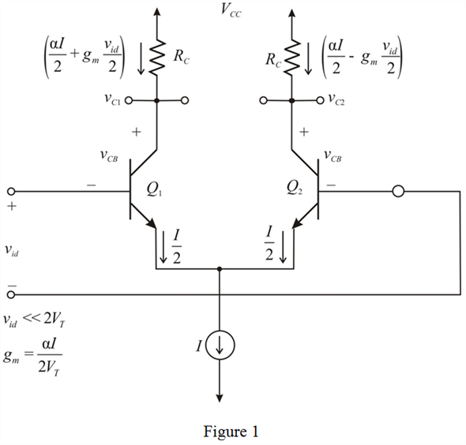

Calculate the emitter current of half circuit of differential amplifier.

The collector current of half circuit is same as the emitter current.
Calculate the expression for small signal collector current of  .
.
Draw the differential amplifier circuit with notations.

Calculate the emitter current of half circuit of differential amplifier.
The collector current of half circuit is same as the emitter current.
Calculate the expression for small signal collector current of .
Calculate the expression for small signal collector current of  .
.
Calculate the small signal collector voltages.
Calculate the value of  such that .
such that .
Substitute  for
for  , for
, for  ,
,  for
for  and
and  for
for  .
.
In order to satisfy the condition, , consider,
Substitute for  ,
,  for
for  and
and  for
for  .
.
Therefore, the differential gain,  is .
is .
Calculate the differential voltage gain of the circuit.
Substitute for and for  .
.
Therefore, the differential output voltage is .